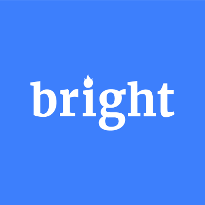
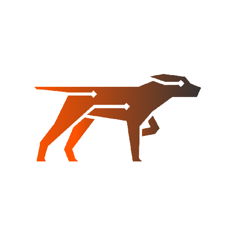
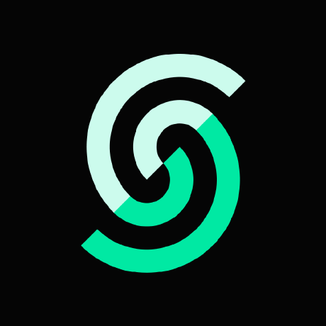
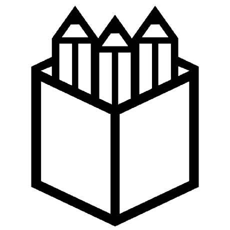
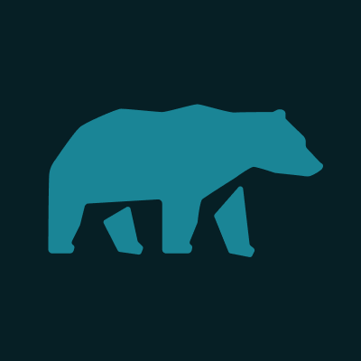
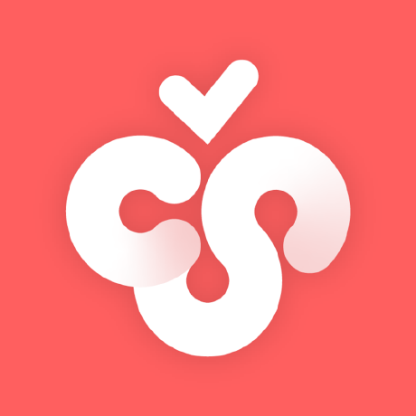
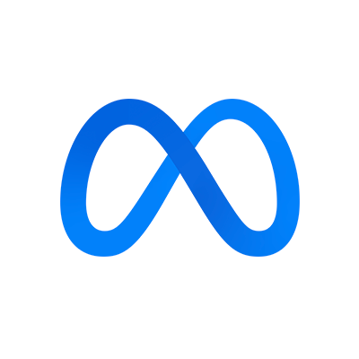

Find The Best MCP Servers - Agent Skills - MCP Clients - Agent Tools
Directory of awesome MCP servers and clients to connect AI agents with your favorite tools.
Official MCP Servers

Bright Data
Empowers AI agents to access, discover, and extract real-time web data, bypassing restrictions and bot detection.

Scout Monitoring
Provide AI Assistants with real-time application performance and error data for targeted code analysis and fixes.
Firecrawl
Empowers LLMs with advanced web scraping capabilities for content extraction, crawling, and search functionalities.
ElevenLabs
Enables interaction with Text to Speech and audio processing APIs for MCP clients.
Magic
Generate modern UI components instantly from natural language descriptions within your IDE.
Browserbase
Enables LLMs to control cloud browsers for web interaction, data extraction, and task automation using Browserbase and Stagehand.
Featured MCP Servers
Godot
Enables AI assistants to interact with the Godot game engine by launching the editor, running projects, and capturing debug output.
Excel
Enables Excel file manipulation capabilities without requiring Microsoft Excel installation.
Unity
Enables communication between Unity and Large Language Models for automating workflows and controlling the Unity Editor.
FastAPI
Exposes FastAPI endpoints as Model Context Protocol (MCP) tools with zero configuration.
Ghidra
Enables Large Language Models (LLMs) to autonomously reverse engineer applications by exposing Ghidra's core functionality through an Model Context Protocol (MCP) server.
Task Master
Streamline AI-driven development workflows by automating task management with Claude.
Top MCP Servers
Superpowers
Empowers AI coding agents with a comprehensive and structured software development workflow, from design refinement to TDD-driven implementation.
TrendRadar
Aggregates trending topics from over 35 platforms, offering intelligent filtering, automated multi-channel notifications, and AI-powered conversational analysis for deep news insights.

Context7
Fetches up-to-date documentation and code examples for LLMs and AI code editors directly from the source.

Penpot
Empower teams with an open-source design and prototyping platform that bridges the gap between design and code through real-time collaboration.
OpenSpec
Facilitates spec-driven development to ensure alignment between humans and AI coding assistants before any code is written.

MindsDB
Build AI applications that can learn and answer questions over large-scale federated data sources using a federated query engine.
Latest MCP Servers
List Manager
Access and manage curated awesome-lists through a command-line interface or an MCP server.
IEEE Research
Integrates academic search across IEEE Xplore, arXiv, ACM Digital Library, and local PDF libraries for use with AI agents.
Saju
Provides a Korean Saju (Four Pillars) MCP server for integration with various AI agents.
AetherVault
Orchestrates multi-agent cryptographic operations across diverse blockchain ecosystems, enabling AI agents to manage digital assets through natural language commands.
InkSync
Transforms visual intuition into structured AI dialogue by providing an interactive canvas for AI models like Claude and GPT.
CandlestickCompass
Analyzes market psychology by combining real-time eye-tracking, multi-model AI predictions, and chart pattern recognition for enhanced technical analysis.
MCP Clients
Zed
Edit code with high performance and multiplayer collaboration.
Cline
Automates coding tasks directly within your IDE using AI, capable of creating/editing files, executing commands, and using the browser with user permission.

Cherry Studio
Enables users to interact with multiple large language model (LLM) providers through a single desktop client.
Goose
Automates complex development tasks using an extensible, open-source AI agent.
LibreChat
Self-host a privacy-first, versatile ChatGPT alternative supporting multiple AI models and advanced features.
5ire
A cross-platform AI assistant and Model Context Protocol (MCP) client that connects to various services and local knowledge bases.
Top Agent Skills
What are Agent Skills?GH Issues Auto-Fixer
Automates the end-to-end GitHub issue lifecycle by spawning sub-agents to implement code fixes, open pull requests, and resolve review comments.
Discord Integration
Manages Discord operations including messaging, reactions, and channel management directly through Claude.

React Code Fix & Linter
Automates code formatting and linting checks to ensure code quality and CI compliance before committing.
GitHub Integration
Manages GitHub pull requests, issues, and CI/CD workflows directly through the command line using the GitHub CLI.
ordercli Food Delivery Manager
Manages and tracks Foodora delivery orders directly from the terminal with real-time status updates.
Google Workspace CLI Assistant
Integrates Google Workspace services like Gmail, Calendar, Drive, and Sheets directly into your terminal workflow.